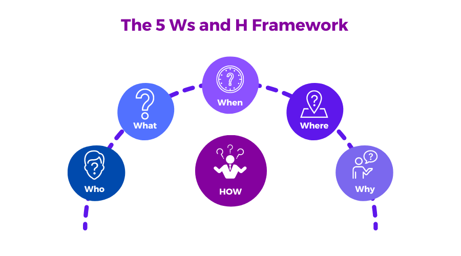

Preservation & Storage
By now, you’ve completed some or all of your product development steps (Data Analysis, Data Visualization) and are ready to save copies of product components for short-, medium-, and/or long-term preservation and storage.
This phase of the data life cycle involves determining or confirming the retention policy for product components and archiving copies of product components accordingly.
Also see a short list of best practices for this phase.
Review this content and make your preservation and storage plan during the Plan & Prepare Phase of your project! Depending on your project needs, you may even integrate your responses to questions below into your project’s data management plan. Doing so will make it easier for all team members to prepare their project components accordingly and will save you time when implementing this phase of the project.
Why Preserve & Store Data Products?
As you wrap up your data project, you will want to think through whether and how project components should be archived and preserved for short-, medium-, and/or long-term viability, utility, and accessibility.
From a data science lens - Investing the time to properly preserve and archive project components ensures they will be available for future project team members (including yourself!) to reference or reuse components in the future. This will reduce the amount of time future teams need to spend recreating or building upon project components, thus increasing future efficiency and decreasing frustration and workload for all.
From an equity lens - Investing the time to properly preserve and archive project components makes it easier for current and future project partners and communities to reference or reuse components of the project now and into the future. In addition to the benefits listed above, preserving and storing project components appropriately can also increase trust between project developers, partners, and the communities impacted by the project.
All of this can make it easier for current partners and communities to want to invest their time and energy into participation and engagement in current and future work, which will slowly but surely increase your network of collaborators, contributors, and partners.
Project Preservation & Storage with an Equity Lens
As you embark on this phase of the data life cycle you will want to apply the 5 Ws and H Framework to your data preservation and storage project. 
Who
Who will be responsible for preparing components of the data project for preservation and storage?
Who will have access to which project components after preservation and archiving is complete? Be sure to think about internal team members and external partners and communities and note that each group might want or need access to different things. It’s best to work with partners and communities to determine which components they will want/need access to.
What
What project components will be preserved and stored? It might not be appropriate or helpful to save everything - think through ALL of the interim and final products you developed during each phase of the data life cycle and determine which items/products should be preserved and stored, and which should be deleted.
It may be helpful to refer to your Region, Division, Office, or Program’s data or file governance and retention policy (aka Records Retention Schedule) to make these decisions, if such a policy exists. If it doesn’t you might consider creating one for your project.
The Water Board DIT Web Document Remediation Guidance (requires VPN) may also be a useful reference for this step.
When
When will project components be preserved and stored? Depending on the project and needs, it may be appropriate to preserve and store some components of the project sooner than others.
When will project components be deleted? Keeping all project components for all time is unrealistic and likely unnecessary. Once you have completed the “What” step above and have a list of ALL of the interim and final products you developed during each phase of the data life cycle, review each item and determine when each item will be deleted (think short-, medium-, long-term and FOREVER).
When will internal team members and external partners and communities be able to access project components before and after preservation and storage is complete?
When will external partners and communities be notified of the preservation and storage plan and its implementation? Ideally, external partners and communities will help you develop the preservation and storage plan during your project’s Plan & Prepare phase so everyone is on the same page with respect to project preservation and storage. If that was not the case, be sure to consult with partners (at the very least) and communities now to develop, refine, or finalize your preservation and storage plan, which should include when folks will be notified of when this phase begins and/or is complete.
Where
- Where will project components be preserved and stored? This will likely include a variety of locations (e.g., databases, open data portals, GitHub repositories, Water Boards or partner web pages, internal file locations, etc.). Be sure to be explicit about where each component will be stored, including webpage URLs or internal file paths, as appropriate.
Why
- Why are you making the decisions you’re making regarding project preservation and storage? Just as with every other phase of the data life cycle, it’s critical to document why you’re making decisions and ensure those justifications are thoroughly documented and in plain, accessible, and inclusive language, as appropriate.
How
How will the project preservation and storage plan be implemented?
How will data and products be protected and made secure through the life of the project and during preservation and storage (e.g., encryption at rest and in transit, access controls on internal users and third parties, access logs, and up-to-date software)?
How will communities and project partners be able to request their personal information be removed or deleted? If this is applicable to your data project, be sure to establish a mechanism for this in partnership with the communities and project partners and during the planning phase.
How will products and files be named? How we name things can make or break our ability to find and resue things in the future. Jenny Bryan has developed guidance on naming things, including:
Make names machine readable
Make names human readable
Make sure the name “plays well” with default ordering (e.g. add a date at the beginning of the file name)
For more guidance and resources on on naming things, visit Jenny Bryan’s How to Name Files GitHub Repositiry